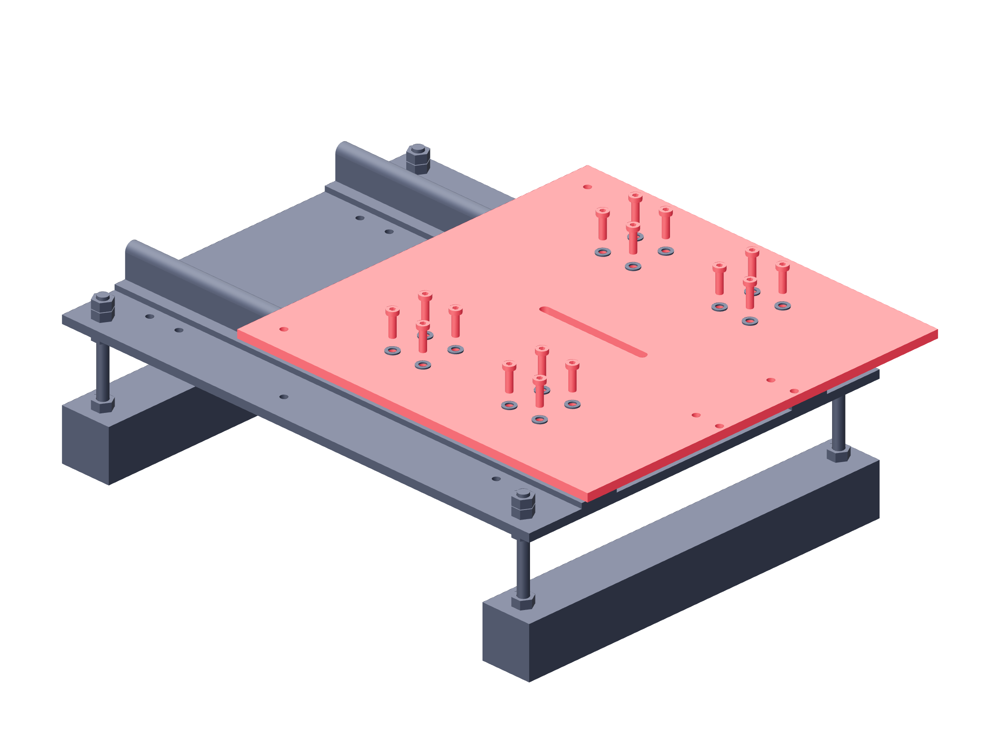

Observation / two stages144 / 179
Attach the level camera carriage
The 300 × 300 mm plate bolts to all four blocks. Its tripod slot faces along the rail direction.
AddPer stage: camera-carriage-plate · 16 M5 × 16 block screws and washers
Tools / setup4 mm hex · block tapped-depth check

- Start all sixteen block screws by hand with washers.
- Seat opposite pairs across the four blocks while keeping the plate flat.
- Slide the carriage by hand through its 200 mm path; progressively secure the second rail.
- Recheck the full path after every rail-foot fastener is seated.
Ready when
The plate stays level and moves through its full manual path without binding; screws clamp before bottoming. A skewed plate or tight region fails the camera datum. Release and re-align the guide joint before adding optics.